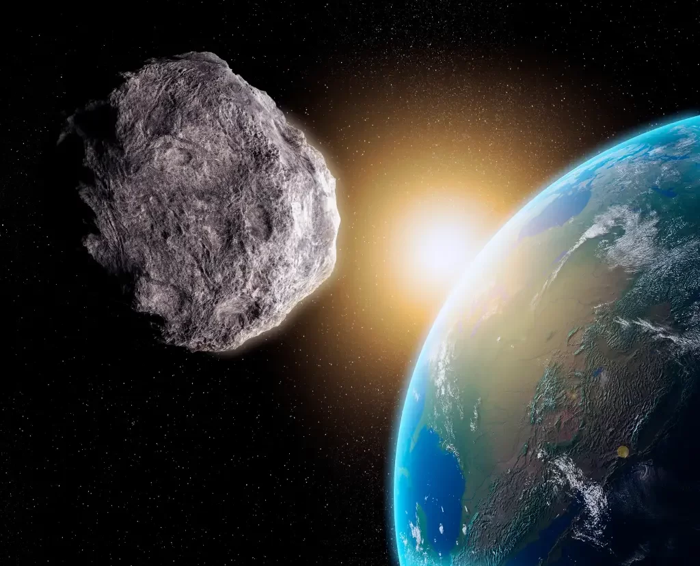

| 
|
Asteroide Potencialmente Perigoso (PHA) batizado de 199145 não representa risco para a vida na
Terra e vai
passar a cerca de 12 vezes a distância média entre o globo terrestre e a Lua.
Um asteroide com cerca de 1,2 km de diâmetro vai passar “relativamente perto” da Terra na noite desta
quarta-feira (15). Mas isso não é motivo para alarde.
O chamado 199145 (2005 YY128) não representa nenhuma ameaça para nós porque, segundo a Nasa, o objeto
passará a
cerca de 12 vezes a distância média entre a Terra e a Lua, a 4,5 milhões de quilômetros.
Para os cientistas, essa distância permite classificá-lo como um Asteroides Próximos da Terra (NEO, na
sigla
em
inglês) e um Asteroide Potencialmente Perigoso (PHA), mas isso não
quer dizer que ele é uma ameaça para a gente nem mesmo em futuro próximo, essa é apenas uma
classificação
técnica, como explica o astrônomo Pedro Bernardinelli.
"A ideia não é assustar, mas chamar atenção ao objeto para observadores", explica o
especialista.
Porém, ressalta o pesquisador, essa técnica de nomeação é importante para que os astrônomos possam
entender
e
medir precisamente a órbita de tais objetos e,
dessa forma, compreender o comportamento desses corpos celestes durante décadas.
"A definição de PHA é basicamente qualquer objeto que vai passar a menos de 0.05 unidades
astronômicas
(1ua =
distancia Terra-Sol) da Terra", detalha o cientista,
que também é doutor em física e astronomia na Universidade da Pensilvânia.
|